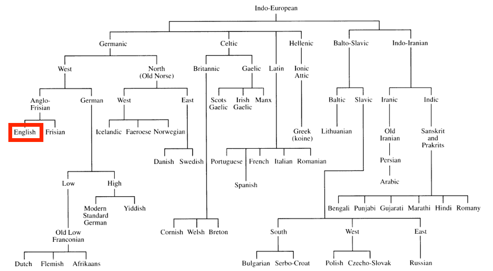
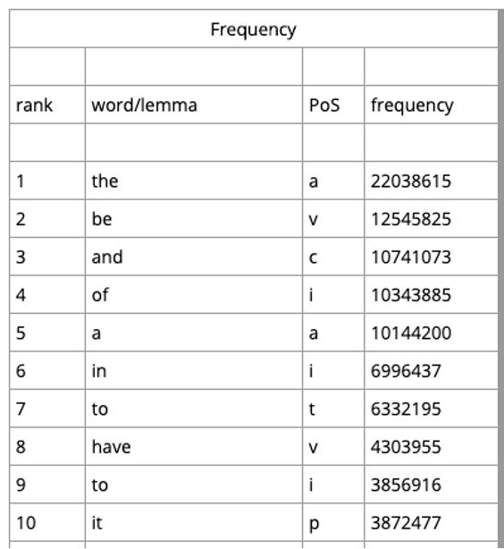
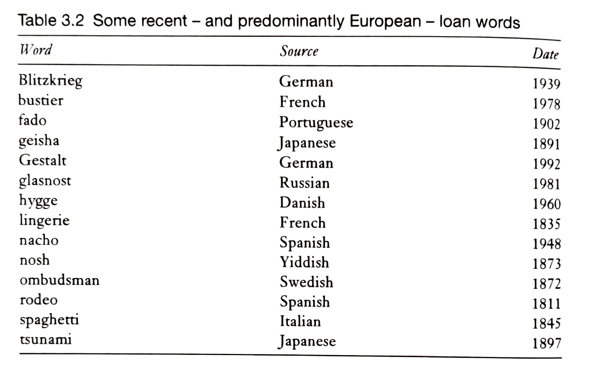
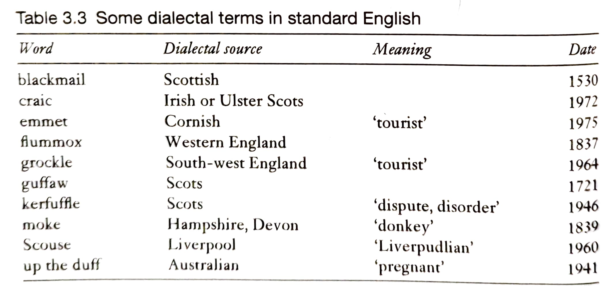
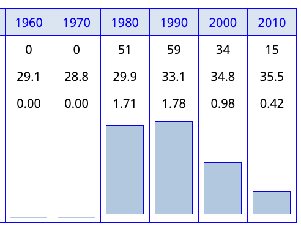
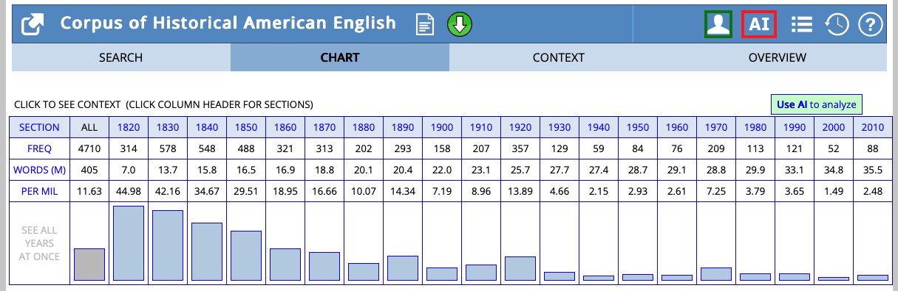
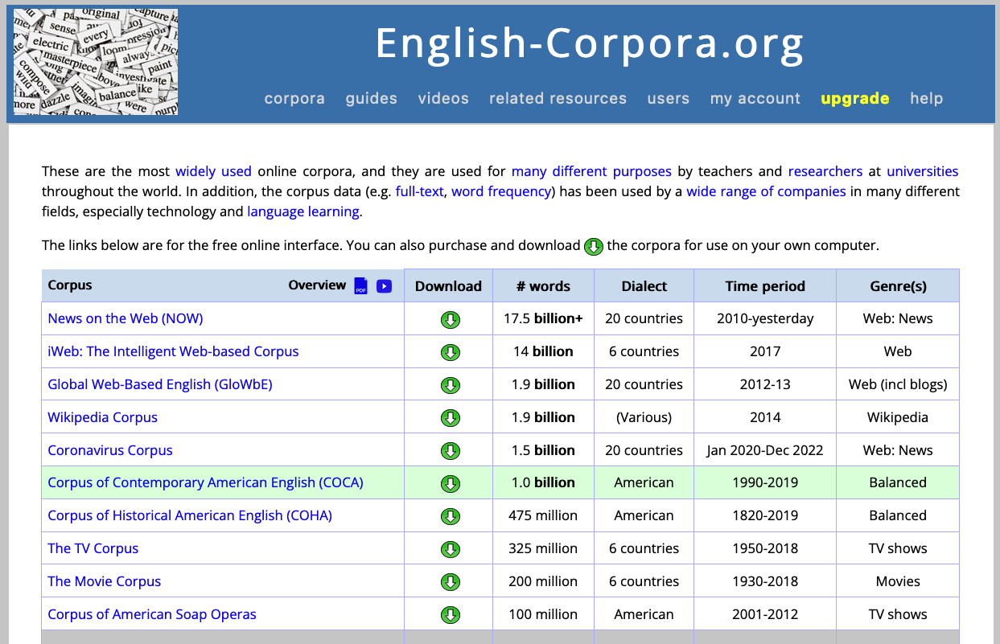
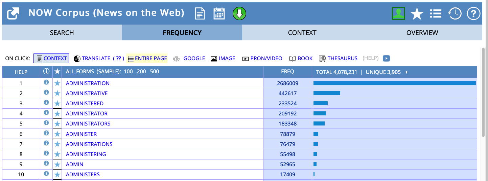

Language change: historical and recent changes in the English lexicon
Lexicology and Lexicography
The history of the English vocabulary
The Indo-European language family

Old English (ca. 450–1100)
External history
- 410 (traditional date according to Bede’s Historia Ecclesiastica Gentis Anglorum: 449): Angles, Saxons and Jutes (and some Frisians), speaking varieties of West Germanic languages, conquer the main British Isle → Germanic Conquest
- c. 700: earliest written documents in Old English
- from 6th century: Christianization
- Irish missionaries (c. 563 St. Columba to Iona)
- missionaries from Rome (c. 597; St. Augustine to Canterbury)
- from 8th century onwards: Viking raids and Danish settlement
- 793: sacking of Monastery of Lindisfarne
- 878: establishment of the ‘Danelaw’
Middle English (ca. 1100–1500)
External history
- 1066: Norman Conquest (William the Conqueror; Battle of Hastings)
- for more than three centuries, England was trilingual (‘Triglossia’): (Anglo-)French and Latin as ‘high variety’ and English as ‘low variety’
- from mid-14th century: English slowly reestablished in various domains (1349 English as language of education, 1362 opening of Parliament, literary language) → English re-introduced as high variety
High varieties
- Latin: church, learning, documents
- French: upper classes, feudal aristocracy
Low variety
- English: peasants, lower clergy, most people in cities
Early Modern English (ca. 1500–1800)
External history
- 1476: William Caxton introduces printing press to England
- 1492: discovery of America
- Renaissance and Humanism: rediscovery of classical authors and literature (e.g. translations of classical literature)
- 1534: Reformation
- 1611: King James Bible (first official English translation of the Bible for the English church)
- growing literacy → literacy spread down the social ranks, and from the male to the female sex (→ new reading public → translations needed)
Late Modern English (ca. 1800–1945)
External history
- from 1700s: British Imperialism → expansion of English all over the world (Australia, India etc.)
- 1700s/1800s: normativism and prescriptivism (1755: Samuel Johnson A Dictionary of the English Language → first comprehensive dictionary of the English language)
- 1900s: scientific and industrial revolutions → development of technical registers
Present-Day English (since ca. 1945)
External history
- New media: The rise of telephone, TV, internet etc. accelerates change.
- American English: Increasing importance and influence after WWI and WWII.
- Global English: Established as a world language and a lingua franca.
- Postcolonial Englishes: Increasing importance (e.g., Indian English), contributing to a truly global English shaped by technological change.
Present-Day English lexicon
A unique mixture
“Der heutige englische Wortschatz ist eine einzigartige Mischung von germanischen und romanischen Elementen; in Bezug auf das Vokabular stellt also das Englische einen Sonderfall unter den europäischen Sprachen dar.” (Leisi 2008: 41)
Most frequent words in English
Analysis based on COCA:

Germanic core vocabulary
Elements surviving from Old English form the basic vocabulary:
- Pronouns, conjunctions, auxiliary verbs
- Fundamental concepts:
- OE mann → man
- OE wīf → wife
- OE cīld → child
- OE hūs → house
- OE drincan → drink
- OE libban → live
Latin influence
Continental borrowings
- street, wine, kitchen, mile, butter, cheese
After settlement (post-450)
- port, mount, -chester
Christianisation
- martyr, clerk, creed, nun, verse
Renaissance and later
- humanist, abdomen, skeleton
Old Norse influence
Viking raids and the Danelaw
- Genetic resemblance between Old Norse and Old English
- Strong influence on basic vocabulary
Examples
- Function words: they, them, their, though
- Verbs: to call, to die, to take, to raise
- Nouns: law, husband, egg, birth
- Adjectives: awkward, ill, weak
Consequence: English drifts apart from West Germanic languages
French superstrate influence
Superstrate: socially/politically superior language influences inferior position
Government/Administration: authority, chancellor, council, court, crown, duke, empire, government, liberty, minister, noble, palace, parliament, prince, reign, royal, sovereign, treaty
Law: accuse, advocate, assault, attorney, blame, crime, evidence, fraud, jail, judge, justice, pardon, plaintiff, prison, punishment, verdict
Religion/Church: abbey, baptism, cathedral, charity, clergy, confess, divine, faith, immortality, mercy, religion, saint, sermon, temptation, virgin, virtue
Military/Warfare: ambush, army, battle, captain, combat, defend, enemy, guard, navy, peace, soldier, spy
Food: appetite, bacon, beef, cream, dinner, feast, fruit, herb, lemon, lettuce, mustard, mutton, olive, pork, salad, salmon, spice, veal
Fashion: diamond, dress, fashion, fur, garment, gown, jewel, lace, robe, satin, wardrobe
Loans from other languages
Portuguese/Spanish: marmalade, banana, cannibal, creole, mosquito, mulatto, tobacco
Italian: alarm, million, balcony, opera, piazza, sonnet, stanza
Greek: bible, character, climate, fantasy, horizon, tragedy
Arabian: admiral, elixir, hazard, mosque, alcohol, alchemy
Persian: azure, chess
Recent European loans and dialectal terms


Types of lexical change
Consequences of borrowing
Consociation vs Dissociation
Consociation: German
- Mund – mündlich
- Heiliger – heilig
- Fuß – Fußgänger
- Wort – wörtlich
- Buch – Buchstabe – Bücherei
Dissociation: English
- mouth – oral
- saint – holy
- foot – pedestrian
- word – verbal
- book – letter – library
Change in usage frequency
Lexical attrition
Word loss through decreased frequency:


Meaning change
Semantic change over time:

Common patterns: narrowing, broadening, amelioration, pejoration
Examples of lexical changes
whilst

How to use english-corpora.org
Overview of corpora

- COHA: Corpus of Historical American English: 400+ million words, 1820–2010, decade-by-decade analysis (Davies 2010)
- COCA: Corpus of Contemporary American English: 1+ billion words, 1990–present, text type categories (Davies 2008)
- NOW: News on the Web: 20+ billion words, 2010–present, 20 countries (Davies 2016)
Views
List view
admin* in COCA
Query syntax
Useful features
- Sections: Filter by text type (fiction, academic, spoken, etc.)
- Chart: Visualize frequency over time or across categories
- KWIC: View concordance lines (keyword in context)
- Collocates: Find words that frequently co-occur
Practice: language change in progress
Overview
Investigate language change in progress using the COHA.
Phenomena
- whom vs who
- try to vs try and
- have gotten vs have got
Task
Collect your findings in this PowerPoint presentation: https://1drv.ms/p/c/9a2ec97d593520f9/IQDU1gjOhJMBSqmABzQtcktWAZyTrvf_0zYOHERnCkdNSSk.
- Investigate the frequency over time in the COHA.
- Compare frequency across text types in the COCA.
- Compare frequency across countries in the NOW corpus.
- Read concordance lines: do the forms differ with regards to their usage in different contexts?
Group findings
- What are your results?
- How can we interpret them linguistically?
- What might explain these changes?
Discussion
What general trends might explain these changes?